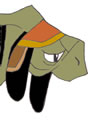
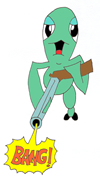

Hunter Beliefs
The Messenger of the Gods  Wise old Coolia: The Hunters religion focuses on the Dragon. To the Hunters, the Dragon is the messenger of the Gods, the savior of the people. The Dragon fights to defend the good and to end all wars.
Young Energetic Coolia: Yeah, I saw a hunter reading an unusual book the other day. He began to utter religious chants about the dragon. Wise old Coolia: That book is called the Dragon Bible and contains much knowledge about the Dragon and its origins. Dragon Bible (1/6) Dragons are the Gods' only other creation. Dragons were the only creation to escape the seductive madness of killing, and the only creation the Gods did not leave behind.
(2/6) At the End of
Genesis,
(3/6) But a great evil
began to feast on the living, denying them their
(4/6) The dragon is
the hand of (5/6) The arrow of
light that cannot be shielded, the shell that cannot be
(6/6) If you ever gain
the dragon's grace, the arrow shall always be shot to the battlefield,
the shell shall |
A mural depicting the dragon's battle against an ancient ship. |

The Hunter Family Name Wise old Coolia: The Hunters have a strong belief in carrying on the family name. A typical hunter will take it upon himself to keep his family heritage alive. He will start a family and pass down his knowledge to his children. Young Energetic Coolia: What sorts of things will a hunter teach his children? Wise old Coolia: To hunt of course! To become a hunter you need to be taught how to handle a weapon. A good hunter can hit a moving target with great accuracy.  Young Energetic Coolia: You mean like this?!!
Wise old Coolia: !!!!!!!!!!!!!
Wise old Coolia: Are you CRAZY! What are you trying to do, kill me?!
|
The family of Baicah which consists of his wife, Kou top left and his daughter Fei, center. |
|
An'jou tells a story to his son Eknak. |


To Die a Hunters Death is to Die an Honorable Death (The two Coolias, while on a hunting trip see a dead hunter in the distance.)
Wise old Coolia: How unfortunate, he died a hunters death. He died as a true hunter should die, in battle. The Hunters believe it is truly honorable to die while engaged in the hunt.
Young Energetic Coolia: Yeah, but look at him!
I mean it was pretty stupid of him to go hunting all on his own. What an idiot!
Wise old Coolia: It may seem idiotic, but to tell you the truth, he probably was reaching an age where he wouldn't be able to hunt any longer. When most Hunters feel this weakness approaching, they go out hunting, to end their lives in the Hunt, never to return. It's an old hunter tradition, to end ones life in the hunt, to die a hunters death. |
Radgam, an old hunter, has died a hunters death. His back has been broken and his blood drained from his body. |